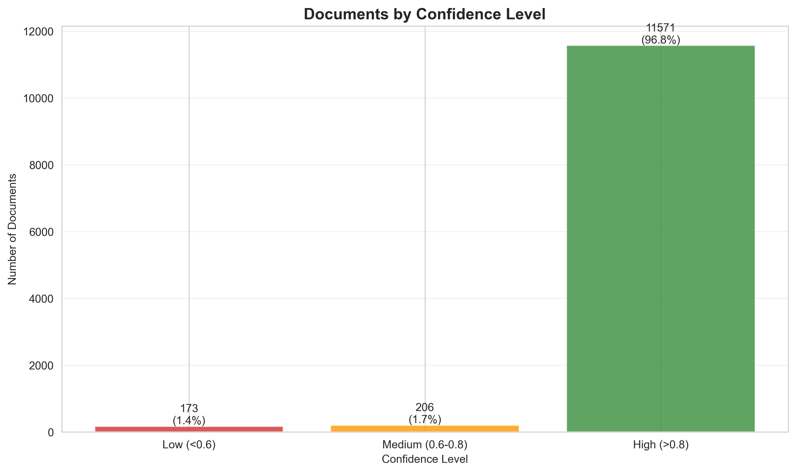
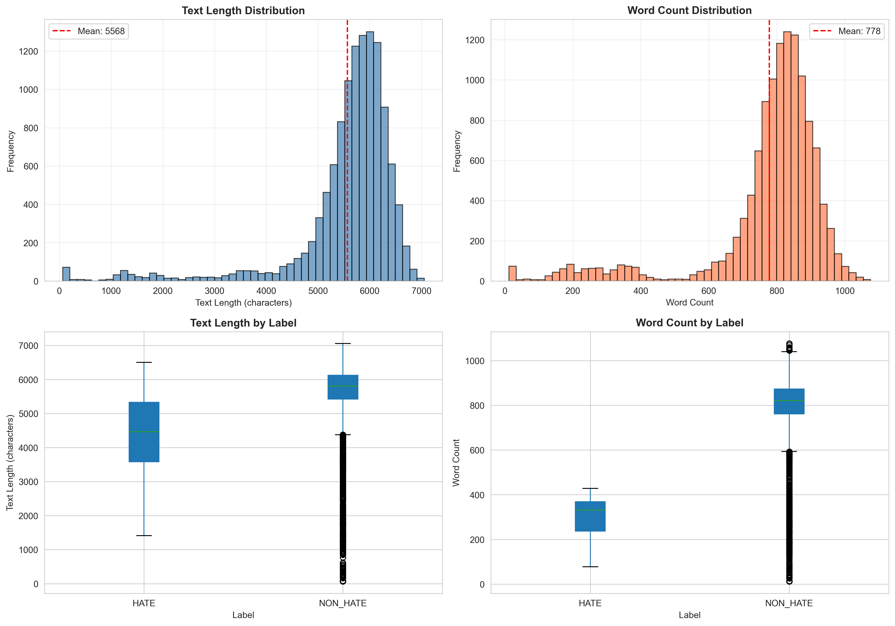
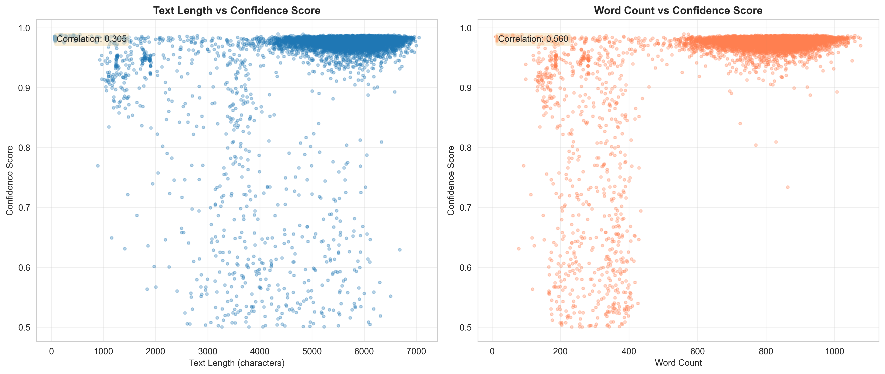
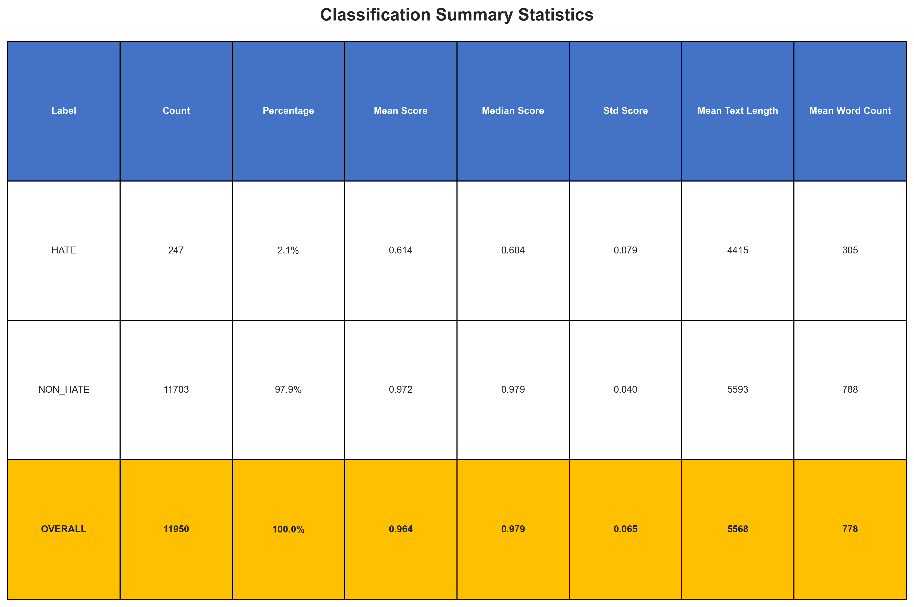

Key Findings
11,950
Total Documents
97.9%
NON_HATE
2.1%
HATE
96.4%
Avg Confidence
96.8%
High Confidence
1.4%
Low Confidence
Visualizations
Label Distribution
Overview of classification results showing the distribution between HATE and NON_HATE labels.

Confidence Scores
Distribution of model confidence scores for all predictions.

Score Distribution by Label
Box plot showing confidence score distributions for each label category.

Confidence Levels
Documents categorized by confidence level: Low (<0.6), Medium (0.6-0.8), High (>0.8).

Confidence Heatmap
Heatmap showing the relationship between labels and confidence levels.

Text Length Analysis
Analysis of text length and word count distributions across the dataset.

Length vs Confidence
Correlation between text length and model confidence scores.

Summary Statistics
Comprehensive summary of classification statistics by label.

Download Data
Access the raw data and detailed statistics:
📊 Summary Statistics (CSV) 📈 Label Statistics (CSV) ⚠️ Low Confidence Predictions (CSV)